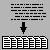

Either the "Generate Script..." option in the "Scripts" menu or the Generate Script button

launch a dialog in which the user sets up how to genereate a group of scripts. By default linear versions and parallel versions are generated. The user specifies the directory path where they want the scripts and finally the base name for the scripts. "base_name".sh runs the linear job and "base_name".bsub.sh runs the parallel (lsf) version.